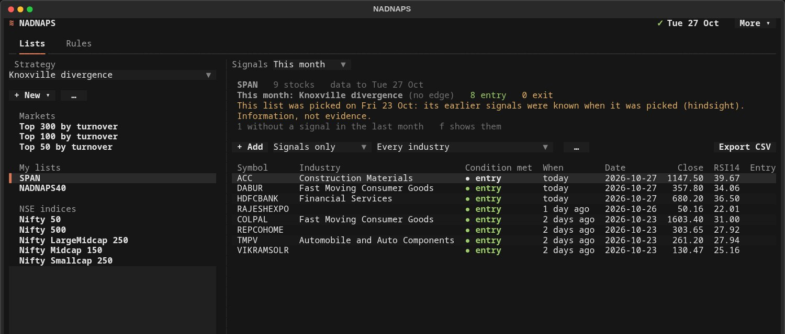
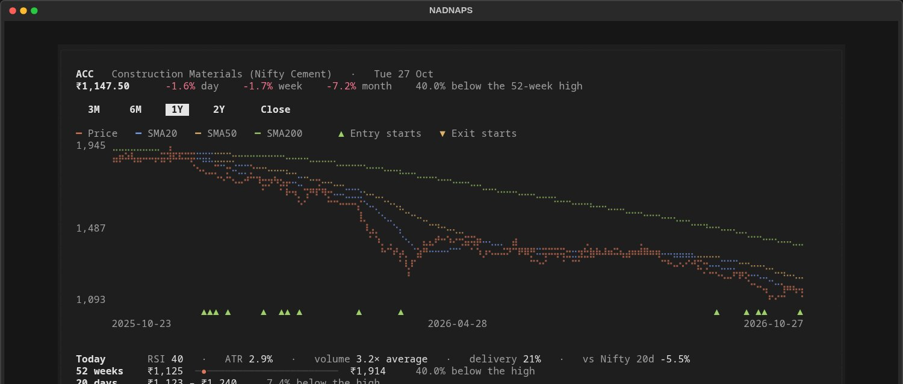
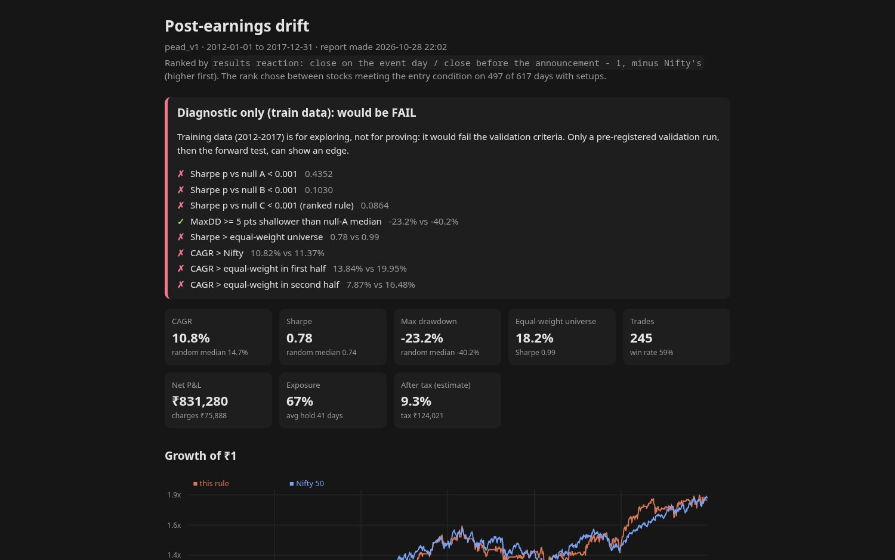

It tells you when you're wrong.
NADNAPS builds a clean, point-in-time database from NSE's own public files on your computer, then races your trading rule against 1,000 random portfolios with the same stocks, exits and costs. A rule counts as an edge only if it beats random picks on years it was not designed on.
The honest answer, so far
Every trading rule tested in NADNAPS so far did no better than random picks. That's not a bug. It's the point: a backtest only means something once it's compared with random picks on years it never saw.
hi52_v1 on years it never sawswing_v1 the original scanner ruleno edgelowvol_trend_v1 passed validation, failed its locked testno edgema_stack_v1 moving-average stackno edgedonchian_v1 Turtle breakoutno edgeichimoku_v1 cloud breakoutno edgeknox_div_v1 Knoxville divergenceno edgemom_12_1_v1 12-1 momentumno edgehi52_v1 near the 52-week high: passed training, failed unseen yearsno edgersi2_v1 Connors RSI(2)no edgepead_v1 post-earnings driftno edge
Did I fool myself?
Test periods are fixed in advance, looks at unseen years are counted and limited to ten, and a locked rule can't be quietly changed afterwards. One screen exists just to ask whether your best result is luck: it counts every try, the chance the best one looks this good by luck alone, and how likely the setting was overfitted.

What's inside


Clean NSE data, on your computer
Every trading day since 2010 from NSE's own files, adjusted for splits, bonuses and demergers, with the top 300 as it was each month. 24 checks run every night.
Lists and signals
Top 300 / 100 / 50 by turnover, NSE index lists (Nifty 50 to Nifty 500) and your own lists, with notes, industries, and what the strategy says today, this week, month or year.
66 textbook rules, or your own
Start from a template, or write one in plain text: MACD, Bollinger, ADX, stochastics, delivery %, Nifty, market breadth, weekly bars, ranks, targets and stops.
Against random portfolios
Every test runs your rule against 1,000 random portfolios with the same exits, sizing and costs, then says plainly whether it could be luck.
Real costs
STT, stamp duty, exchange fees, GST, DP charges, slippage and liquidity limits. Re-price any test at Zerodha, Dhan, Groww, Angel One or Upstox charges, at your own capital.
Reports and a console
A report for every test: verdict, charts, every trade, higher-cost reruns, market regimes and a tax estimate by financial year. The console puts every run, trade and tax year on one page.
Paper books
Lock a rule and keep a would-be trading log from the next day on, never rewritten afterwards.
Up to date by itself
An evening update fetches the newest trading day. "New today" lists every signal that just started, and alerts can come by email.
Calm by design
A clean terminal app: few buttons, undo instead of "are you sure?", one shortcut list. Export any table as CSV. Nothing about your lists, rules or results leaves your computer.

What you need
- Windows 11 or Linux. Windows 10 and macOS are not tested yet.
- Windows: one installer that brings its own Python. Linux: Python 3.12, 3.13 or 3.14, installed with pipx.
- About 4 GB of RAM, and about 8 GB of disk for the first setup (about 3 GB afterwards).
- Internet for NSE's public files: the history since 2010 on first setup (a few hours, in the background), then a short update each evening.
Research and education tool. Information only, not investment advice. NADNAPS gives no buy or sell recommendations; "entry condition met" means a rule's conditions are true, not a tip. Past results do not predict future returns. Your email is used only to tell you when NADNAPS launches.